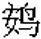

夫激荡之会，利于乘时，劲风盘空，轻蓬振翮，故以豪杰称一时者多矣，而品节卓异之士，盖难得一。卢氏曹植甫先生名培元，幼承义方，长怀大愿，秉性宽厚，立行贞明。躬居山曲，设校授徒，专心一志，启迪后进，或有未谛，循循诱之，历久不渝，惠流遐迩。又不泥古，为学日新，作时世之前驱，与童冠而俱迈。爰使旧乡丕变，日见昭明，君子自强，永无意必[391]。而韬光里巷，处之怡然。此岂辁才小慧之徒之所能至哉。中华民国二十有三年秋，年届七十，含和守素，笃行如初。门人敬仰，同心立表，冀彰潜德，亦报师恩云尔。铭曰：
华土奥衍，代生英贤，或居或作，历四千年，文物有赫，峙于中天。海涛外薄，黄神徙倚[392]，巧黠因时，枪鹊起[393]，然犹飘风[394]，终朝而已。卓哉先生，遗荣崇实，开拓新流，恢弘文术，诲人不惓，惟精惟一[395]。介立或有，恒久则难，敷教翊化，实邦之翰，敢契贞石，以励后昆。
会稽后学鲁迅谨撰。
注 释
[390] 本篇最初发表于1935年6月15日北平《细流》杂志第五、六期合刊，发表时题为《曹植甫先生教泽碑碑文》。鲁迅1934年11月29日日记：“午后为靖华之父作教泽碑文一篇成。”
[391] 永无意必 永不任性固执。语出《论语·子罕》：“子绝四：毋意、毋必、毋固、毋我。”
[392] 黄神徙倚 黄神，意为黄帝之神，原出《淮南子·览冥训》：“黄神啸吟”。据汉代高诱注：“时无法度，黄帝之神伤道之衰，故啸吟而长叹也。”徙倚，徘徊不定的意思。
[393] 枪鹊起 比喻乘时崛起。《庄子·逍遥游》篇：“蜩与学鸠笑之曰：‘我决起而飞，枪榆、枋；时则不至，而控于地而已矣，奚以之九万里而南为？’……斥

（）笑之曰：‘彼且奚适也？我腾跃而上，不过数仞而下，翱翔蓬蒿之间，此亦飞之至也。’”《文选》谢朓《和伏武昌登孙权故城诗》李善注引《庄子》（佚文）：“鹊上高城之垝，而巢于高榆之颠；城坏巢折，陵风而起。故君子之居世也，得时则义行，失时则鹊起。”、鹊都是小鸟；枪是飞跃的意思。[394] 飘风 不会长久的意思，语出《老子》：“飘风不终朝”。
[395] 惟精惟一 语出《尚书·大禹谟》：“人心惟危，道心惟微，惟精惟一，允执厥中。”